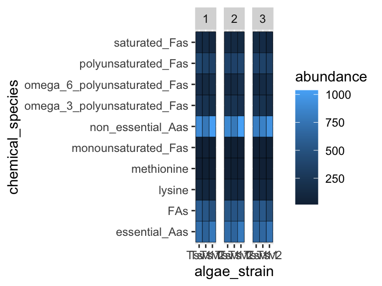
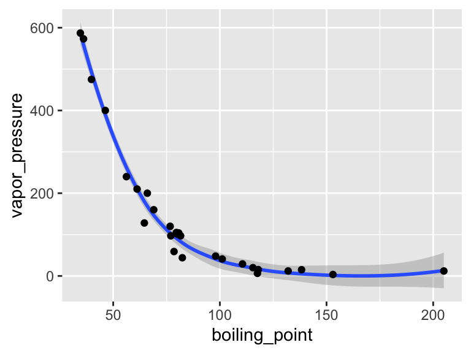
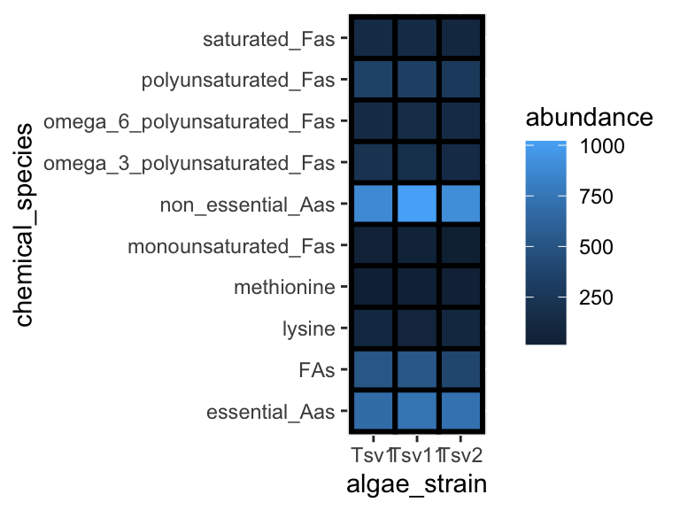
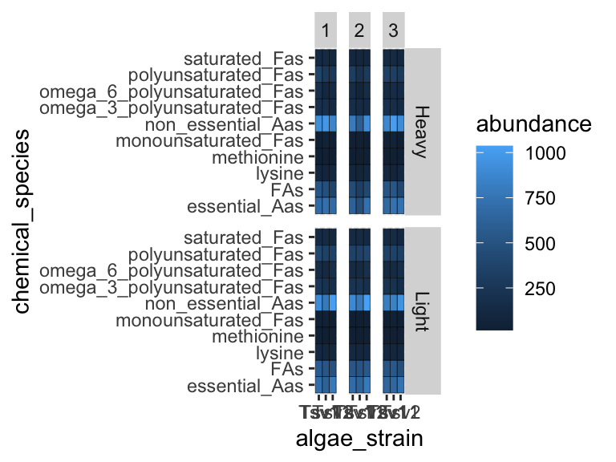
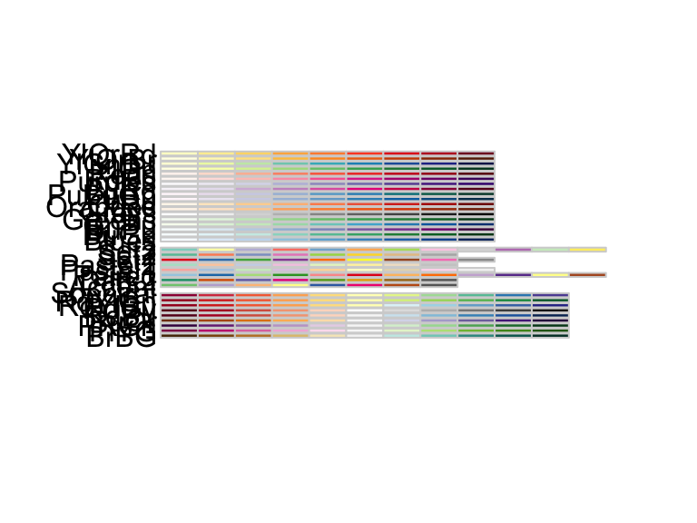
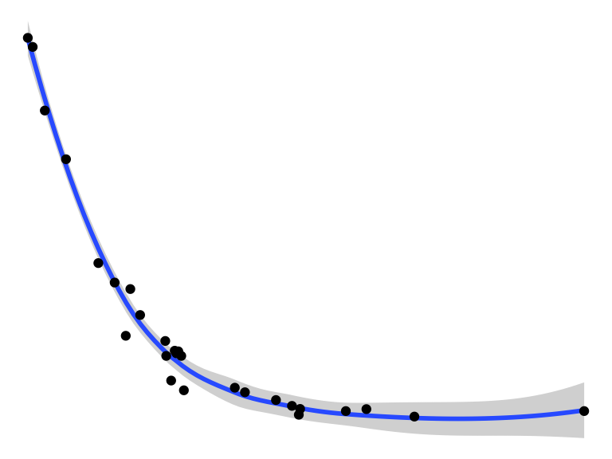
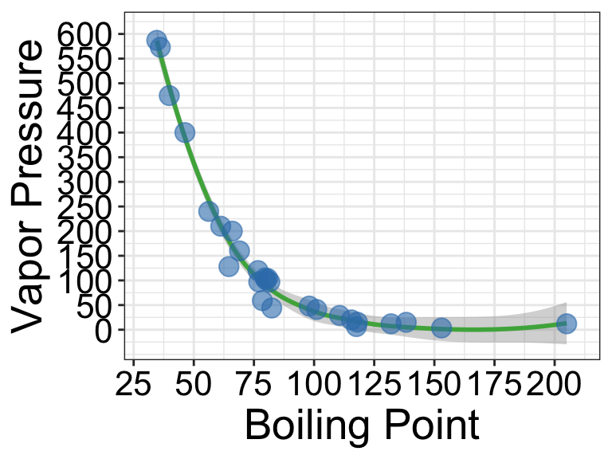

6 geoms, facets, scales, themes
We’ve looked at how to import data, filter data, and map variables in our data to geometric shapes to make plots. Let’s have a look at a few more things. For these examples, we’re going to use this solvents dataset.
6.1 Geoms
I’d like to introduce you to two new geoms. The first geom_smooth() is used when there are two continuous variables. It is particularly nice when geom_point() is stacked on top of it.
library(tidyverse)
solvents <- read_csv("https://thebustalab.github.io/R_For_Chemists/sample_data/solvents.csv")
## Rows: 32 Columns: 14
## ── Column specification ────────────────────────────────────────────────────────
## Delimiter: ","
## chr (4): solvent, formula, CAS_number, category
## dbl (9): boiling_point, melting_point, density, solubility_in_water, relativ...
## lgl (1): miscible_with_water
##
## ℹ Use `spec()` to retrieve the full column specification for this data.
## ℹ Specify the column types or set `show_col_types = FALSE` to quiet this message.
ggplot(data = solvents, aes(x = boiling_point, y = vapor_pressure)) +
geom_smooth() +
geom_point()
## `geom_smooth()` using method = 'loess' and formula 'y ~ x'
Also, please be aware of geom_tile(), which is nice for situations with two discrete variables and one continuous variable. geom_tile() makes what are often referred to as heat maps. Note that geom_tile() is somewhat similar to geom_point(shape = 21), in that it has both fill and color aesthetics that control the center color and the border color, respectively.
library(tidyverse)
algae <- read_csv("https://thebustalab.github.io/R_For_Chemists/sample_data/algae_data.csv")
## Rows: 180 Columns: 5
## ── Column specification ────────────────────────────────────────────────────────
## Delimiter: ","
## chr (3): algae_strain, harvesting_regime, chemical_species
## dbl (2): replicate, abundance
##
## ℹ Use `spec()` to retrieve the full column specification for this data.
## ℹ Specify the column types or set `show_col_types = FALSE` to quiet this message.
ggplot(data = filter(algae, harvesting_regime == "Heavy"), aes(x = algae_strain, y = chemical_species)) +
geom_tile(aes(fill = abundance), color = "black", size = 1)
These examples should illustrate that there is, to some degree, correspondence between the type of data you are interested in plotting (number of discrete and continuous variables) and the types of geoms that can effectively be used to represent the data.
There is a handy cheat sheet that can help you identify the right geom for your situation. Please keep this cheat sheet in mind for your future plotting needs…
6.2 Facets
As alluded to in Exercises 1, it is possible to map variables in your dataset to more than the geometric features of shapes (i.e. geoms). One very common way of doing this is with facets. Faceting creates small multiples of your plot, each of which shows a different subset of your data based on a categorical variable of your choice. Let’s check it out.
Here, we can facet in the horizontal direction:
ggplot(data = algae, aes(x = algae_strain, y = chemical_species)) +
geom_tile(aes(fill = abundance), color = "black") +
facet_grid(.~replicate)
We can facet in the vertical direction:
ggplot(data = algae, aes(x = algae_strain, y = chemical_species)) +
geom_tile(aes(fill = abundance), color = "black") +
facet_grid(replicate~.)
And we can do both at the same time:
ggplot(data = algae, aes(x = algae_strain, y = chemical_species)) +
geom_tile(aes(fill = abundance), color = "black") +
facet_grid(harvesting_regime~replicate)
Faceting is a great way to describe more variation in your plot without having to make your geoms more complicated. For situations where you need to generate lots and lots of facets, consider facet_wrap instead of facet_grid.
6.3 Scales
Every time you define an aesthetic mapping (e.g. aes(x = algae_strain)), you are defining a new scale that is added to your plot. You can control these scales using the scale_* family of commands. Consider our faceting example above. In it, we use geom_tile(aes(fill = abundance)) to map the abundance variable to the fill aesthetic of the tiles. This creates a scale called fill that we can adjust using scale_fill_*. In this case, fill is mapped to a continuous variable and so the fill scale is a color gradient. Therefore, scale_fill_gradient() is the command we need to change it. Remember that you could always type ?scale_fill_ into the console and it will help you find relevant help topics that will provide more detail. Another option is to google: “How to modify color scale ggplot geom_tile”, which will undoubtedly turn up a wealth of help.
ggplot(data = algae, aes(x = algae_strain, y = chemical_species)) +
geom_tile(aes(fill = abundance), color = "black") +
facet_grid(harvesting_regime~replicate) +
scale_fill_gradient(low = "white", high = "black") +
theme_classic()
6.3.1 RColorBrewer
One particularly useful type of scale are those provided by RColorBrewer:
# install.packages("RColorBrewer")
library(RColorBrewer)
library(ggplot2)
display.brewer.all()
ggplot(mtcars) +
geom_point(
aes(x = mpg, y = factor(cyl), fill = factor(carb)),
shape = 21, size = 6
) +
scale_fill_brewer(palette = "Set1")
6.4 Themes
So far we’ve just looked at how to control the means by which your data is represented on the plot. There are also components of the plot that are, strictly speaking, not data per se, but rather non-data ink. These are controlled using the theme() family of commands. There are two ways to go about this.
6.4.1 Complete themes
ggplot comes with a handful of built in “complete themes”. These will change the appearance of your plots with respect to the non-data ink. Compare the following plots:
ggplot(data = solvents, aes(x = boiling_point, y = vapor_pressure)) +
geom_smooth() +
geom_point() +
theme_classic()
## `geom_smooth()` using method = 'loess' and formula 'y ~ x'
ggplot(data = solvents, aes(x = boiling_point, y = vapor_pressure)) +
geom_smooth() +
geom_point() +
theme_dark()
## `geom_smooth()` using method = 'loess' and formula 'y ~ x'
ggplot(data = solvents, aes(x = boiling_point, y = vapor_pressure)) +
geom_smooth() +
geom_point() +
theme_void()
## `geom_smooth()` using method = 'loess' and formula 'y ~ x'
6.4.2 Theme components
You can also change individual components of themes. This can be a bit tricky, but it’s all explained if you run ?theme(). Hare is an example (and google will provide many, many more).
ggplot(data = solvents, aes(x = boiling_point, y = vapor_pressure)) +
geom_smooth() +
geom_point() +
theme(
text = element_text(size = 20, color = "black")
)
## `geom_smooth()` using method = 'loess' and formula 'y ~ x'
Last, here is an example of combining scale_* and theme* with previous commands to really get a plot looking sharp.
ggplot(data = solvents, aes(x = boiling_point, y = vapor_pressure)) +
geom_smooth(color = "#4daf4a") +
scale_x_continuous(name = "Boiling Point", breaks = seq(0,200,25), limits = c(30,210)) +
scale_y_continuous(name = "Vapor Pressure", breaks = seq(0,600,50)) +
geom_point(color = "#377eb8", size = 4, alpha = 0.6) +
theme_bw() +
theme(
axis.text = element_text(color = "black"),
text = element_text(size = 20, color = "black")
)
## `geom_smooth()` using method = 'loess' and formula 'y ~ x'